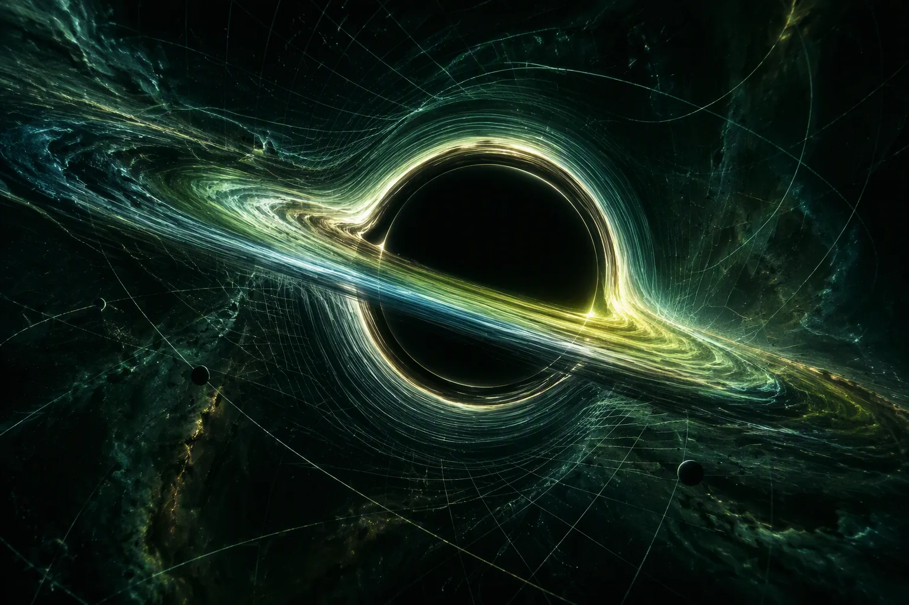

Ph.D. in Pure Mathematics
Université de Montréal · Supervisor: Juan Margalef Bentabol · Co-supervisor: Eduardo J. S. Villaseñor
Beginning January 2027

01 / ABOUT
I am a mathematics student at Université de Montréal working at the interface of geometry and physics.
02 / CAUSAL GEOMETRY
The filled causal cone evolves continuously between the Carroll and Galilei contraction limits.
03 / ARTICLES
Articles and preprints will be listed here as they become available.
04 / ACADEMIC PATH
Université de Montréal · Supervisor: Juan Margalef Bentabol · Co-supervisor: Eduardo J. S. Villaseñor
Beginning January 2027
Université de Montréal · GPA: 4.3/4.3
Ongoing · Expected completion: December 2026
05 / RESEARCH INTERNSHIPS
Université de Montréal · Juan Margalef Bentabol
Université de Montréal · Dmitry Faifman
Université de Montréal · Octavian Cornea
06 / THESIS
Undergraduate thesis supervised by Juan Margalef Bentabol · August 2026
07 / TALKS
08 / AWARDS & FUNDING
09 / TEACHING EXPERIENCE
Teaching assistantships at Université de Montréal.
MAT1400
MAT1923
Université de MontréalMAT1903
MAT2466
Université de MontréalMAT1400
Université de Montréal10 / CONTACT